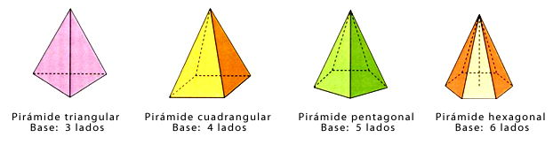

Los prismas y pirámides son cuerpos geométricos cuyas caras son todas polígonos. Los prismas tienen dos caras paralelas e iguales, llamadas bases, el resto de sus caras son paralelogramos. Las pirámides tienen una base y el resto de las caras son triángulos.
Los prismas son poliedros que tienen: base, cara lateral, arista lateral, vértice, arista básica.
Está constituido por dos bases poligonales e iguales y sus caras laterales son paralelogramos. Según el número de lados de la base se le da el nombre al prisma.
Por ejemplo: Prismas triangular (sus bases son un triángulo), Prismas cuadrangulares (sus bases son cuadrados) , Prisma pentagonal (sus bases son pentágonos), Prisma hexagonal (sus bases son hexágonos) , etc.
La altura de un prisma es la distancia entre las bases.
El prisma es recto cuando su eje es perpendicular a las bases y oblicuo cuando el ángulo entre el eje y la base es diferente a base 90°. Si el prisma es cortado de tal manera que la sección producida no sea paralela a una de sus bases, recibe el nombre de prisma truncado.
Es una figura tridimensional constituida por una base poligonal y por caras laterales cuyas aristas concurren a un punto del espacio llamado cúspide o vértice común, por lo tanto las caras laterales siempre serán triangulares. El eje o altura de la pirámide es la línea que va del vértice al centro de la base.
La apotema lateral de una pirámide regular es la altura de cualquiera de sus caras laterales.
La pirámide se llama rectangular cuando el eje es perpendicular al centro de la base, en un caso diferente se llama oblicua. La porción de pirámide comprendida entre la base y la sección producida por un plano que corta sus caras laterales se llama tronco de la pirámide o pirámide truncada.
Tipos de pirámides
En las pirámides, las caras laterales son siempre triángulos. Por tanto, para distinguirlas y nombrarlas se utiliza el polígono de la base.
